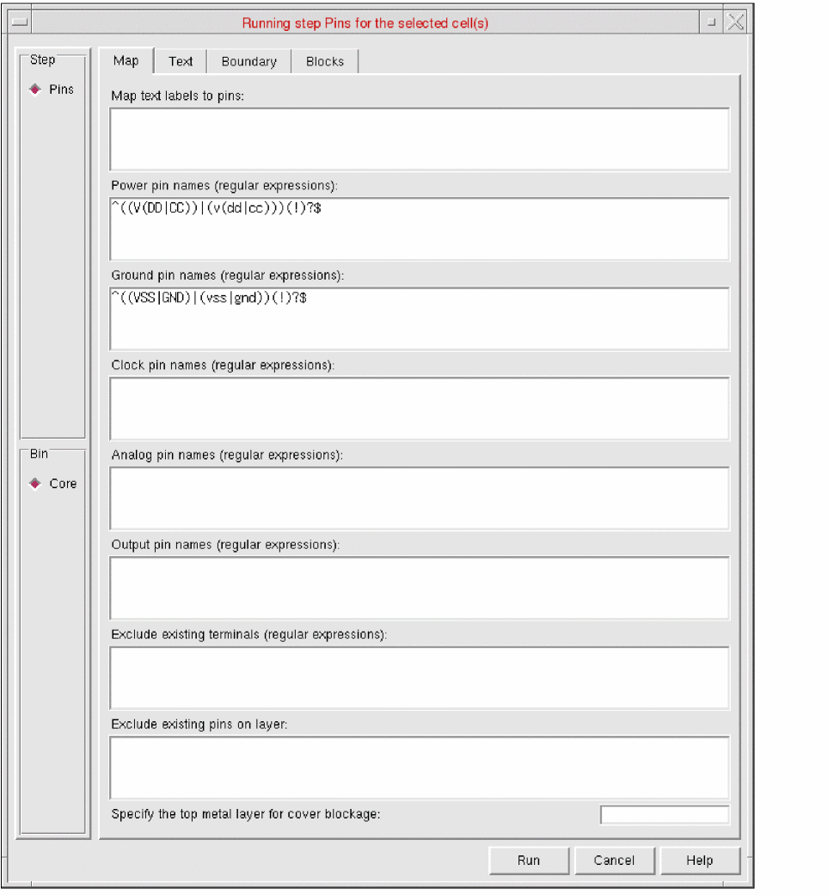

Specifying Pin Mappings for Abstract Generation
To specify pin mapping settings in Standalone Abstract Generator:
-
Choose Flow – Pins or click the Pins icon.
The Running step Pins form is displayed. The Map tab is the first tab in the form.
On the Map tab, you can specify the text labels to be used for creating starting pin shapes for each of the nets to be extracted. You can also specify the pins that are power, ground, clock, analog, or output pins. - In the Map text labels to pins field, specify the text labels in the layout view that are to be mapped to the pins on nets in the pins view. Specify the layer-purpose pairs based on which you want Abstract Generator to search for geometry of any given layer-purpose pair with a text label.
- Specify the pin names in the Power pin names, Ground pin names, Clock pin names, Analog pin names, and Output pin names fields. Abstract Generator identifies the respective pin names based on the label strings in the abstract.
- In the Exclude existing terminals field, specify a list of existing terminals that you want Abstract Generator to ignore.
- In the Exclude existing pins on layers field, specify a list of layers on which you want Abstract Generator to ignore the existing pins.
- In the Specify the top metal layer for cover blockage field, specify the metal layer to cover blockages.
- Click Run.
The Percent Complete message box reports the progress of the step.
Related Topics
Return to top